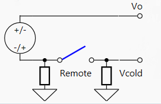

IO974, IO975 - Thermocouple simulation — Writes the IO974 and IO975 voltage outputs
Your model can only contain one of these blocks for each I/O module in your target machine.
The value to be output from thermocouple channel X in millivolts. Type double.
The voltage provided at Vo is relative to Vcold. This allows the channel to compensate for the presence of small voltages at the Vcold input.
If your target machine only contains one I/O module, leave the default value (1). If more than one I/O module of this type is present, select a unique number (1-255) for each of your modules.
Select the type of I/O module with which this driver block will be used.
Select the active input/output channels in a vector. A defined number of channels can be selected using square brackets, for example [1 2 3]. A sequence of channels can be selected using a colon, for example, 1:4.
Define the initial signal level present on the outputs after the application has been downloaded. The values can be set individually by entering a vector: the value at a certain position in the Initial Values vector is applied to the channel as defined in the Active Channels vector. A scalar value applies to all the channels; for example, for individual values, type "[1 1.5 0 2.5]", and to set all channels to zero, type "0".
Define whether the initial values are also applied once the application has stopped. The behavior can be set individually for each channel using a vector. A scalar value applies to all the channels; for example, for individual values, type "[1 0 0 1]", and to set all channels to zero, type "0". "1" means use the Initial Value and "0" means keep the latest value.
Select the voltage range for the output channels: auto (max. ±100mV), ±20mV, ±50mV or ±100mV. Auto range automatically switches between the three ranges according to the requested voltage in order to provide the finest voltage resolution and best accuracy available. At the changeover point between each range there may be small discontinuities in the output voltage steps. The range can be set individually for a group of channels depending on the total amount of available channels.
Enable remote sense to compensate for a ground potential difference between the front panel ground (Pin78) and the remote ground.

The module uses the Vcold input as a reference to the front panel ground during initialization to check for a connection. If Vcold is left unconnected but remote sense is still enabled, the I/O module uses the front panel ground (Pin78) as a reference instead of the Vcold input. The possible combinations are as follows:
| Setup | Output |
|---|---|
| Vcold connected, Remote-Sense enabled | Vo = V + Vcold + VGND |
| Vcold connected, Remote-Sense disabled | Vo = V + Vcold |
| Vcold disconnected, Remote-Sense enabled | Vo = V |
| Vcold disconnected, Remote-Sense disabled | Vo = V |
Defines the base sample time at which this driver block gets its sample hit. This parameter can also be set to -1 for inherited sample time. The units are in seconds.
There are two approaches for mapping this block to a specific I/O module installed in your target machine. All modules of the same type must be configured using the same method.
Auto-Search: with the default value -1 the I/O module will be automatically located in the target machine. If you have multiple modules of the same type, you must use explicit addressing.
Explicit Addressing: to explicitly define the logical address of the I/O module in the target machine, you can provide the PCI bus and slot numbers as a vector: [bus, slot]. To determine these numbers, run the following command in the MATLAB command window:
speedgoat.getIoInterfaces("TargetName", "mySpeedgoat", "Advanced", true)Note that the PCI address can change whenever an I/O module is added or removed.